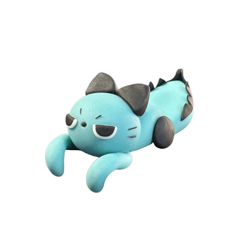
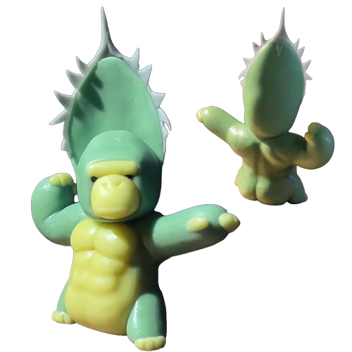
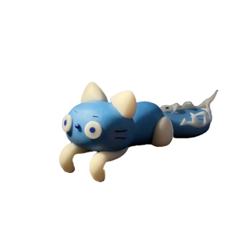
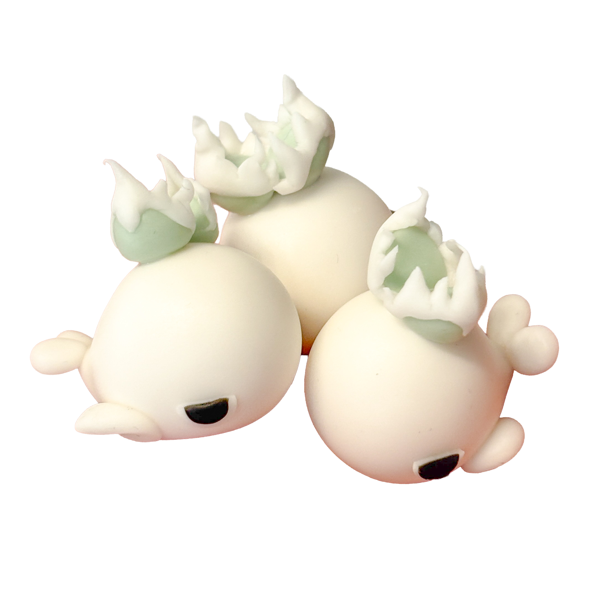
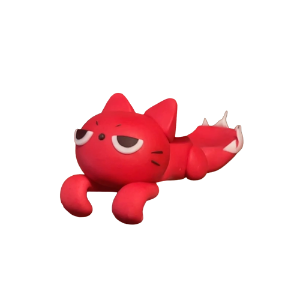
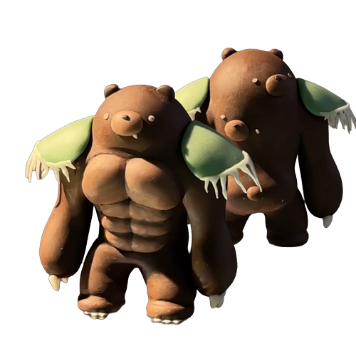
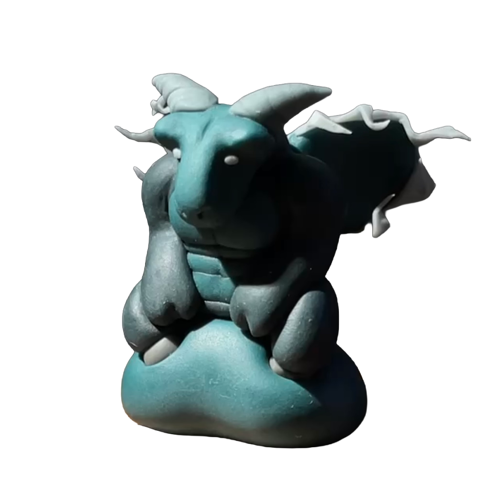

標本目録
鋭い鋸歯を持つ ネコ型鋸歯生物。 非常に凶暴そうな見た目をしているが、 大半の時間は寝ている。 なお、 鋸歯の向きはランダムではなく、 本人なりの美的感覚で整えていることが 近年の研究で明らかになっている。

アガベの中でも青さの強い”BB”が変態した、ネコ型鋸歯生物。 日中は岩陰で休眠していることが多いが、 高照度環境下では 尾部鋸歯の黒化現象が確認される。 また、光量不足の個体ほど 光を求めプレステラにしがみつく行動が見られる。

強靭な筋肉質の身体と、 後頭部の大型鋸歯葉を特徴とする 大型鋸歯生物。 葉部は高い防御性能を持つ一方、 非常に重量があるため、 長時間の活動を苦手としている。 最近の研究では、 葉の角度によって 感情表現を行っている可能性が示唆されている。

乾燥地帯で確認される ネコ型鋸歯生物。 丸みを帯びた塊根状の身体には 高い貯水能力があり、 長期間の乾燥にも耐えることができる。 しかし、 水切れが近づくと急速に軟化し、 極端に機嫌が悪化する。 なお、 尻尾や手足に見える部位は 歩行器官ではなく“根”であることが、 近年の研究で明らかになっている。

群れで行動する 社会性鋸歯生物。 幼体から青年期にかけては 「フォリグリズリー」と呼ばれ、 集団内で順位を形成しながら成長する。 なお、 群れ内では鋸歯の大きさよりも、 威圧感のある立ち姿が重視されることが 近年の研究で明らかになっている。

縄張り争いに敗北した個体を 身体へ吸収し続けた結果、 背部に複数の顔を形成した変異個体。 「多頭個体」とも呼ばれ、 背中の顔が多いほど 群れ内で高い地位を持つ。 また、 雌個体からの人気も極めて高いことが 生態観測記録に残されている。

フィリグリズリー群の頂点に立つ 極めて希少な王個体。 頭部には、 圓葉拇指に酷似した 王冠状器官を形成する。 この個体が移動を開始すると、 群れ全体も同時に行動を開始するため、 周囲の生態系へ甚大な影響を与える。 なお、 野生下で遭遇した場合は 直ちに引き返すべきとされている。

深海域で確認される植物融合型巨大鋸歯生物。 頭頂部の噴水器官から放出される水流は、単なる噴出ではなく 葉片化した鋸歯として展開し、周囲に刺突状の波紋を形成する。 これらの“葉”は防御器官であると同時に、浮上・潜行を制御する推進装置として機能する。 本個体は動物と植物の境界が崩壊した象徴種として分類される。

鋸歯生態系に適応したネコ型生物。 全身は普段は淡い赤色を呈するが、強い環境ストレス（乾燥・捕食圧・光過多）に反応すると、体表の細胞が急激に発色し、鮮烈な赤色へと変化する。 鋸歯生物群落の近辺では、プレステラの突起構造に擬態した休眠姿勢を取ることが確認されている。 観察者の間では、「環境状態を視覚化する生物」として非常に高い研究価値を持つとされる。

鋸歯生物群の中でも、最も広域に分布する基本形態個体群。
本種は特定の環境に強く適応する“極地特化型”とは異なり、環境変化への耐性と再現性の高さに特化している。そのため、森林・乾燥地・人工環境のいずれにおいても安定して生存が確認されている。
個体ごとの差異が小さいことから、群れ内では“基準個体（ベースライン）”として扱われることが多く、他の鋸歯生物の成長比較対象として頻繁に観測される。
研究者の間では「進化の停滞ではなく、完成された汎用形態」とする説もあり、その評価は二分されている。

めちゃくちゃキンタマがでかい悪魔。
めちゃくちゃキンタマがデカい。